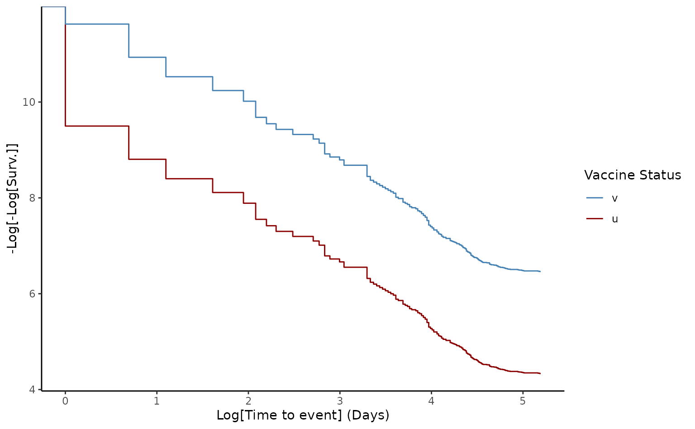
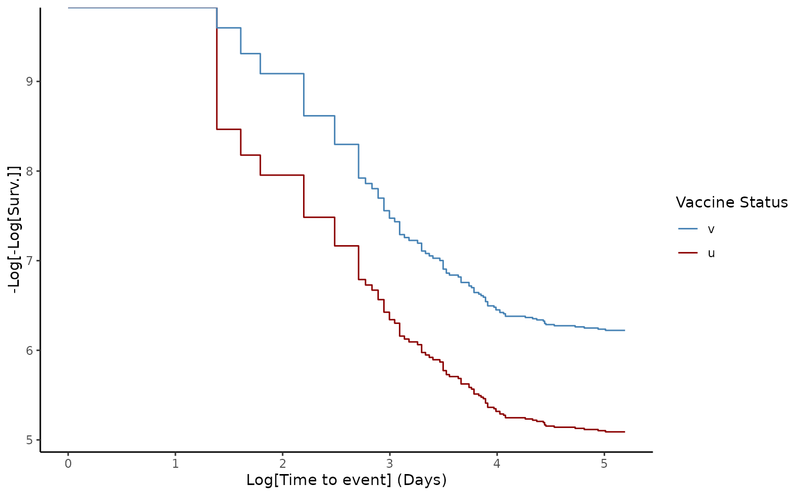
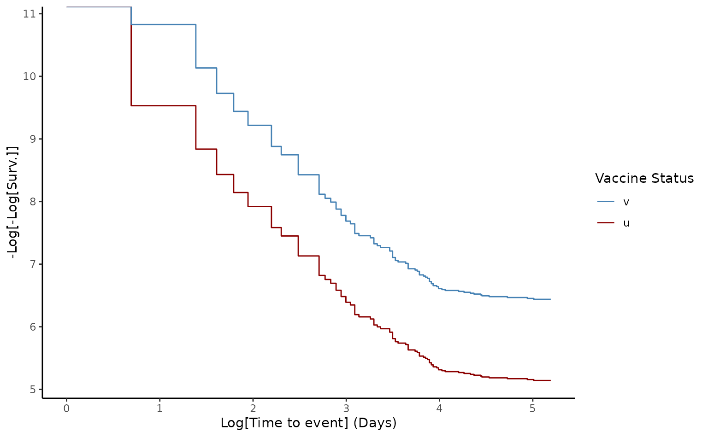

Cohort Design
In cohort studies, vaccine effectiveness
()
is calculated after following vaccinated and unvaccinated individuals
over time. However, VE may depend on individual characteristics (e.g.,
age and sex) and external factors (e.g., environment, number of doses,
virus strain, and calendar period). Typically, VE is estimated in open
or dynamic cohorts, where individuals can enter or leave the cohort at
any time after the initial study date and change their vaccination
status. Thus,
can be estimated by survival analysis methods, substituting the relative
risk for the hazard ratio
(),
which considers the person-time at risk in the estimation of VE (Halloran, Longini, and
Struchiner 2010). Vaccineff package estimates VE
using
and therefore, the outcome variable is the time from the initial study
date to the occurrence of the event (e.g., infection, death,
hospitalization) or the date of the end of the study. VE is approximated
by the Cox proportional hazards model that is usually written by the
following expression:
where is the risk function for each individual over the time given a set of explanatory/predictors variables denoted by (e.g., vaccination status, age, sex). represents the baseline hazard function when all variables of are equal to 0. In the Cox regression model, it is unnecessary to specify , making this type of analysis a semiparametric model. Finally, the interest of the analysis is to compare the risk function of two individuals according to the values of the explanatory variables, which is achieved through the estimated coefficients of the model (Equation 1) and the . For example, if is the vaccination status where denotes the vaccinated group and denotes the unvaccinated group without including other predictors, the HR corresponds to:
therefore, the estimated does not depend on time , and can remain unspecified, assuming that the effect of an explanatory variable is proportional over time representing the proportional hazard (PH) assumption. When indicates a reduction in the risk of an event of interest over time and the context of VE, it will be the expected outcome. Vaccineff uses the Schoenfeld residual test to determine whether the global PH assumption of the model is violated.
When working with observational data, other potential factors or
baseline characteristics besides vaccination status could explain the
observed differences in the risk of the event (e.g., death, reinfection)
between vaccinated and unvaccinated individuals. Vaccineff
allows the estimation of VE with and without running a iterative
matching process (IMP) to emulate the balance achieved by a trial
design on potential confounders without involving the calendar period
which implies that the disease incidence has not changed during the
study period.
vaccineff package uses the number of days elapsed from
the vaccine administration to the occurrence of the event to measure the
length of follow-up.

Estimating VE without iterative matching process
vaccineff performs the conventional estimation of VE
based on the Cox regression model using the option
match=FALSE in make_vaccineff_data function.
This is the simplest possible model, as it does not take into account
that VE can be affected by possible confounding factors, such as age or
sex. To begin the analysis, the first step is to transform the original
data into a vaccineff data by
make_vaccineff_data function and declare the names of
variables containing relevant information such as the date of outcome or
event occurs outcome_date_col or the censoring date
censoring_date_col, date of last dose
vacc_date_col, labels to identify vaccinated
vaccinated_status and unvaccinated groups
unvaccinated_status, and the date of last follow up of the
cohort end_cohort. The censoring_date_col
option should be used if the study end date varies for some subjects
because an event other than the study outcome has occurred, for example,
when a subject dies from causes other than the disease of interest.
The crude VE (unadjusted) is then estimated and the survival curves can also be visualized by the following code:
# Load example data
data("cohortdata")
# Create `vaccineff_data`
vaccineff_data <- make_vaccineff_data(
data_set = cohortdata,
outcome_date_col = "death_date",
censoring_date_col = "death_other_causes",
vacc_date_col = "vaccine_date_2",
vaccinated_status = "v",
unvaccinated_status = "u",
immunization_delay = 15,
end_cohort = as.Date("2044-12-31"),
match = FALSE
)
# Estimate the Vaccinef Effectiveness (VE)
ve1 <- estimate_vaccineff(vaccineff_data, at = 180)
# Print summary of VE
summary(ve1)
#> Vaccine Effectiveness at 180 days computed as VE = 1 - HR:
#> VE lower.95 upper.95
#> 0.647 0.4796 0.7606
#>
#> Schoenfeld test for Proportional Hazards assumption:
#> p-value = 0.001
#> Warning in print.summary_vaccineff(x):
#> p-value < 0.05. Please check loglog plot for Proportional Hazards assumption
# Generate Survival plot
plot(ve1, type = "surv", percentage = FALSE, cumulative = FALSE)
# Generate loglog plot to check proportional hazards
plot(ve1, type = "loglog")
The crude VE of death from two doses was 68.9% [95% CI 54.6-78.7]. Furthermore, since the log-log plot shows that the curves do not appear entirely parallel, this indicates that there is a slight violation of the proportional assumption, which in many data sets can be resolved after adjusting for possible confounding factors.
Estimating VE with iterative matching process
vaccineff performs an IMP after the end of the study by
dividing the cohort between those who were never vaccinated and those
who received the vaccine at some point during follow-up. This method
should be seen as an attempt to control for potential confounders that
could influence the vaccine status as well as the occurrence of the
interesting event. IMP selects pairs of unvaccinated and vaccinated
individuals with similar characteristics (potential confounders, e.g.,
age, sex), making the groups comparable on important confounders
variables, as shown in the figure below:

IMP runs a nearest neighbor matching using Mahalanobis distance to analyze similarities between a pair of unvaccinated and vaccinated subjects as follows:
where corresponds to values of confounders variables y is the sample variance-covariance matrix to standardize the variables. Thus, IMP selects the unvaccinated individual with the shortest distance for each person in the vaccinated group. However, all these pairings are provisional because the IMP procedure checks for each pairing that the matched unvaccinated individual has not developed the outcome (e.g., death) before the immunization date of the vaccinated partner. This point is important because the follow-up start date for both subjects corresponds to the immunization date of the vaccinated subject plus the number of days required for the vaccine to have a protective effect:

For this reason, the algorithm iterates until the largest number of
matched pairs with equivalent exposure time is obtained. At the end of
the procedure, unvaccinated and vaccinated individuals who cannot be
matched are eliminated from the analysis. The estimation of VE with IMP
using vaccineff is performed using a Cox regression model
with a robust variance estimator to account for the clustering within
matched pairs Austin (2014). In our example, we decided
to control for age and sex using the options match=TRUE and
exact = c("age", "sex") in the
make_vaccineff_data function. Now, this function creates a
set of matched data, look at the new dataset using
vaccineff_data_matched[["matching"]]$match.
When the exact option is used, the IMP searches for each
case, a control with the same characteristics. In our example, the IMP
matches pairs of the exact same sex and age. If an exact match is not
required, a nearest option is also available to match
similar but not identical pairs. This option could make possible to
match pairs with a caliper or distance of 1 on age (e.g., case of 49
years with a control of 50 years). Note also that both options can be
used simultaneously for the IMP process.
The following code block estimates a VE using IMP matching only
considering the exact option.
# Load example data
data("cohortdata")
# Create `vaccineff_data`
vaccineff_data_matched <- make_vaccineff_data(
data_set = cohortdata,
outcome_date_col = "death_date",
censoring_date_col = "death_other_causes",
vacc_date_col = "vaccine_date_2",
vaccinated_status = "v",
unvaccinated_status = "u",
immunization_delay = 15,
end_cohort = as.Date("2044-12-31"),
match = TRUE,
exact = c("age", "sex"),
nearest = NULL
)If the summary function is applied to a vaccineff
object, a report of exact IMP is displayed.
summary(vaccineff_data_matched)
#> Cohort start: 2044-03-25
#> Cohort end: 2044-12-31
#> The start date of the cohort was defined as the mininimum immunization date.
#> 79 registers were removed with outcomes before the start date.
#>
#> Nearest neighbors matching iteratively performed.
#> Number of iterations: 4
#> Balance all:
#> u v smd
#> age 30.9006989 48.3349260 0.8765144
#> sex_F 0.4836599 0.5761684 0.1861500
#> sex_M 0.5163401 0.4238316 -0.1861500
#>
#> Balance matched:
#> u v smd
#> age 44.028537 44.028537 0
#> sex_F 0.552095 0.552095 0
#> sex_M 0.447905 0.447905 0
#>
#> Summary vaccination:
#> u v
#> All 62668 37253
#> Matched 27613 27613
#> Unmatched 35055 9640
#>
#> // tags: outcome_date_col:death_date, censoring_date_col:death_other_causes, vacc_date_col:vaccine_date_2, immunization_date_col:immunization_date, vacc_status_col:vaccine_statusIn the output of vaccineff_data_matched, the user can
check the differences between the unmatched and matched cohorts using
standardized mean difference (SMD) to measure the distance between the
unvaccinated and vaccinated individuals. In our example, SMD for age and
sex is 0 because an exact IMP was run, see the results in the balance
matched output. The number of unmatched individuals (removed) from the
analysis is also reported. In this example, out of a total of 62743
unvaccinated individuals and 37257 vaccinated individuals, the IMP
procedure was able to match 27612 pairs considering the characteristics
of the individuals and the time of exposure. Now, using
the vaccineff_data_matched object in the
estimate_vaccineff function, the VE is estimated.
# Estimate the Vaccinef Effectiveness (VE)
ve2 <- estimate_vaccineff(vaccineff_data_matched, at = 180)
# Print summary of VE
summary(ve2)
#> Vaccine Effectiveness at 180 days computed as VE = 1 - HR:
#> VE lower.95 upper.95
#> 0.6773 0.4722 0.8027
#>
#> Schoenfeld test for Proportional Hazards assumption:
#> p-value = 0.0196
#> Warning in print.summary_vaccineff(x):
#> p-value < 0.05. Please check loglog plot for Proportional Hazards assumption
# Generate loglog plot to check proportional hazards
plot(ve2, type = "loglog")
# Generate Survival plot
plot(ve2, type = "surv", percentage = FALSE, cumulative = FALSE)
In the matched cohort, the estimated VE for death of two doses was 66.7% [95% CI 46.1–79.4]. Although, Schoenfeld test was rejected (p value<0.05), the log-log plot demonstrates that the proportional hazards assumption was not violated, as they appear quite parallel compared to the crude log-log output.
Finally, to compare the effect of a IMP matching on the VE estimation using a caliper of 2 on age and the exact sex, the following code can be implemented:
# Load example data
data("cohortdata")
# Create `vaccineff_data`
vaccineff_data_matched2 <- make_vaccineff_data(
data_set = cohortdata,
outcome_date_col = "death_date",
censoring_date_col = "death_other_causes",
vacc_date_col = "vaccine_date_2",
vaccinated_status = "v",
unvaccinated_status = "u",
immunization_delay = 15,
end_cohort = as.Date("2044-12-31"),
match = TRUE,
exact = "sex",
nearest = c(age = 2)
)
summary(vaccineff_data_matched2)
#> Cohort start: 2044-03-25
#> Cohort end: 2044-12-31
#> The start date of the cohort was defined as the mininimum immunization date.
#> 79 registers were removed with outcomes before the start date.
#>
#> Nearest neighbors matching iteratively performed.
#> Number of iterations: 6
#> Balance all:
#> u v smd
#> age 30.9006989 48.3349260 0.8765144
#> sex_F 0.4836599 0.5761684 0.1861500
#> sex_M 0.5163401 0.4238316 -0.1861500
#>
#> Balance matched:
#> u v smd
#> age 42.2555577 47.8208314 0.3026898
#> sex_F 0.5697364 0.5697364 0.0000000
#> sex_M 0.4302636 0.4302636 0.0000000
#>
#> Summary vaccination:
#> u v
#> All 62668 37253
#> Matched 36301 36301
#> Unmatched 26367 952
#>
#> // tags: outcome_date_col:death_date, censoring_date_col:death_other_causes, vacc_date_col:vaccine_date_2, immunization_date_col:immunization_date, vacc_status_col:vaccine_status
# Estimate the Vaccinef Effectiveness (VE)
ve3 <- estimate_vaccineff(vaccineff_data_matched2, at = 180)
# Print summary of VE
summary(ve3)
#> Vaccine Effectiveness at 180 days computed as VE = 1 - HR:
#> VE lower.95 upper.95
#> 0.8165 0.719 0.8802
#>
#> Schoenfeld test for Proportional Hazards assumption:
#> p-value = 0.0356
#> Warning in print.summary_vaccineff(x):
#> p-value < 0.05. Please check loglog plot for Proportional Hazards assumption
# Generate loglog plot to check proportional hazards
plot(ve3, type = "loglog")
# Generate Survival plot
plot(ve3, type = "surv", percentage = FALSE, cumulative = FALSE)